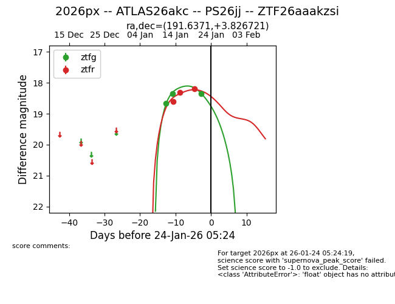
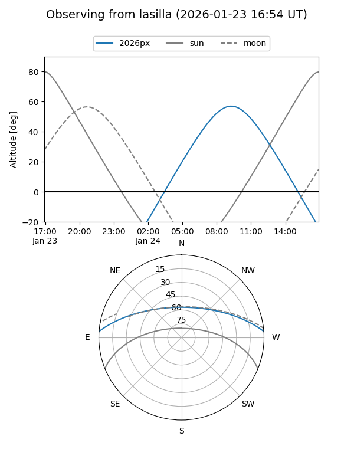
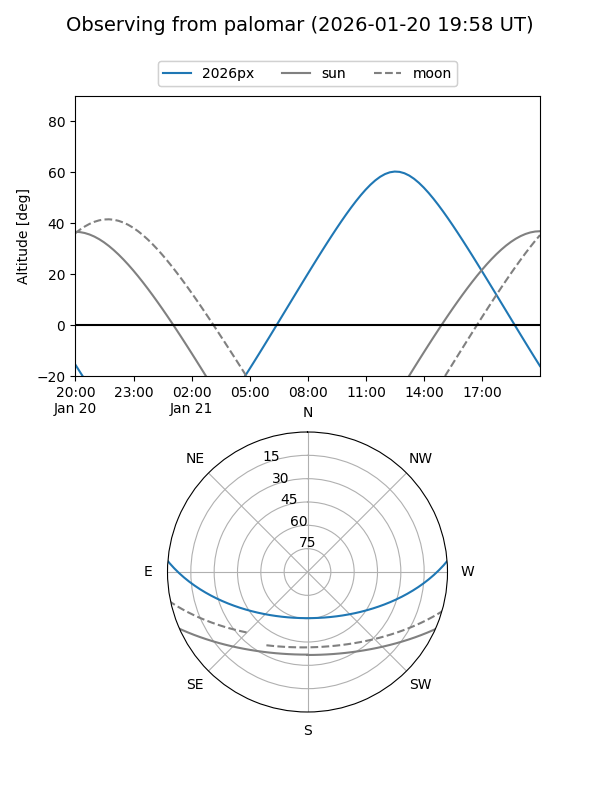
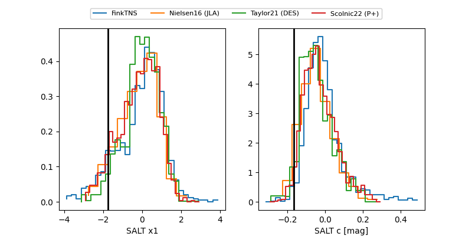

2026px
Target 2026px at 2026-01-23 21:41
Aliases and brokers:
FINK: link
Lasair: link
ALeRCE: link
TNS: link
YSE: link
alt names
ZTF26aaakzsi (ztf,fink_ztf)
2026px (tns,yse)
ATLAS26akc (atlas)
PS26jj (panstarrs)
Coordinates:
equatorial (ra, dec) = 191.6371,+3.82672
equatorial (HMS+DMS) = 12:46:32.90,+03:49:36.20
galactic (l, b) = (299.8510,+66.66922)
Flags:
Photometry:
last ztfg=18.35, ztfr=18.20
3 ztfg, 3 ztfr detections
Lightcurve

Visibility


Additional plots
